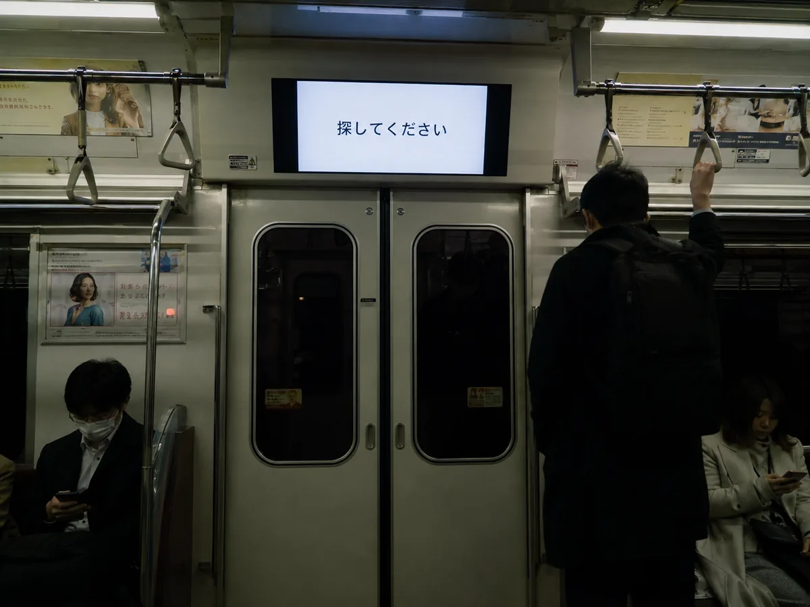
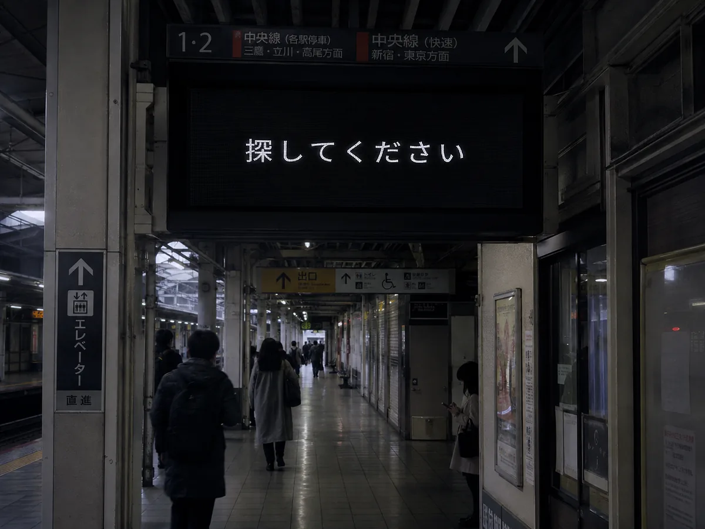
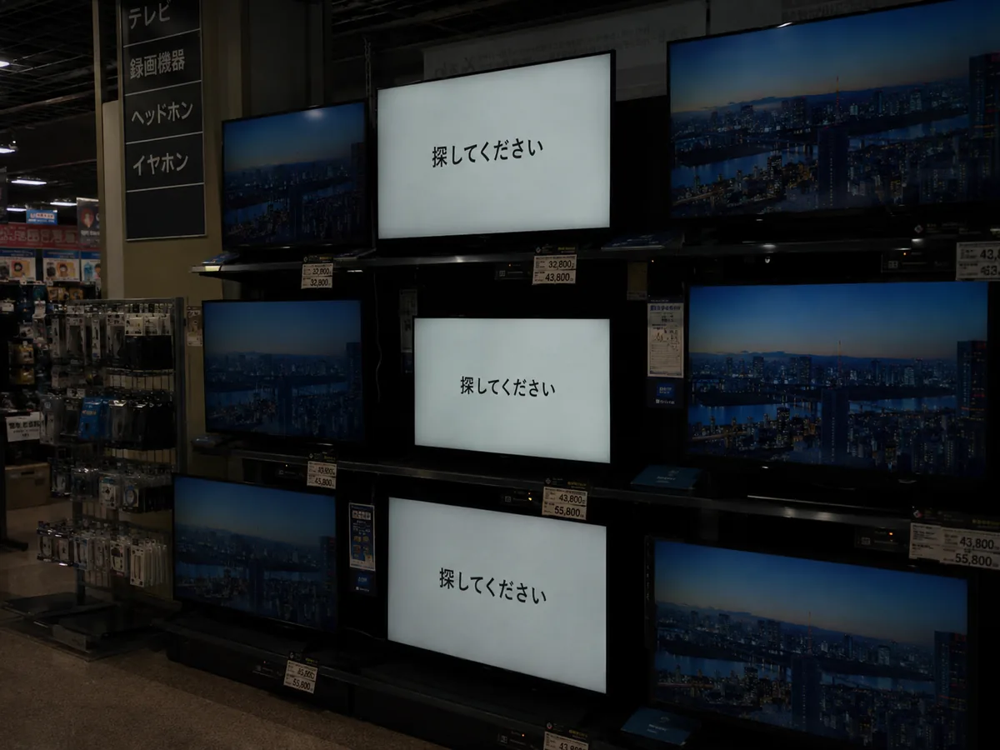
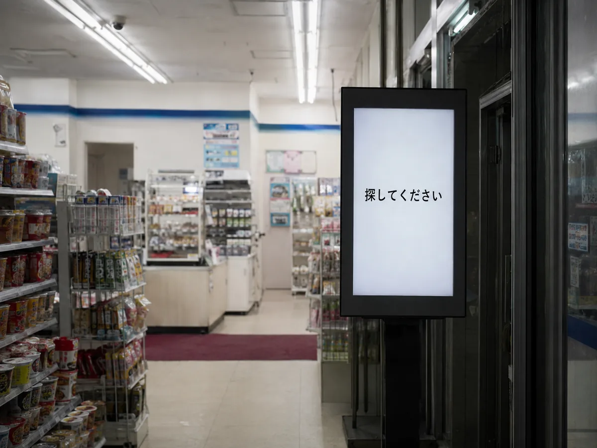
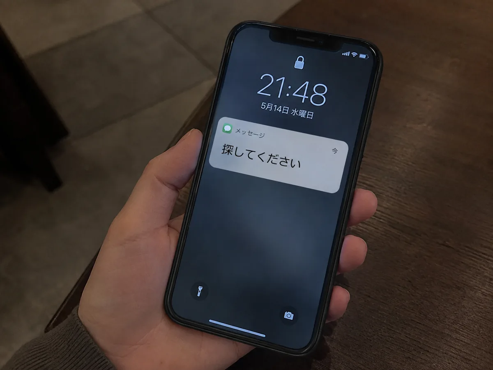

ぽ
ぽぽろ
@poporo · 1分
なんか電車の広告やばい。サイバー攻撃？

なんか電車の広告やばい。サイバー攻撃？

え？ガチ？？

こんな壊れ方ある？普通に怖いんだけど

店長、デジタル広告なんかいらないって言った自分がバカでした。
めっちゃバズってます。謎の広告風って感じ。
グッジョブ！

これ俺が撮った写真じゃなくて勝手に回ってきたけど話題のヤツだよな？
サイバーテロの実験かなにか？日本オワタ？
